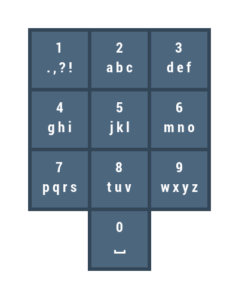

An đang sử dụng chiếc điện thoại Nokia 1280 huyền thoại của anh ấy để nhắn tin cho bạn bè, bàn phím của nó nhìn giống như hình bên dưới.

Cách đánh chữ bằng bàn phím này như sau: để gõ 'u', bạn cần phải bấm phím 8 hai lần; để gõ '.' bạn cần bấm phím 1 một lần; để gõ '5', bạn cần bấm phím 5 bốn lần...
An nhăn tin rất nhiều và nhắn liên tục (chắc là nhắn tin cho người yêu mới nhắn nhiều như thế) nên anh ta chế tạo ra một cánh tay robot để thực hiện công việc nhắn tin cho cậu ta. Robot này hoạt động khá chậm, nó phải mất 1s để bấm 1 phím bất kì và mất 1s để di chuyển từ phím này đến phím khác. Ban đầu cánh tay robot luôn nằm ở vị trí phím '1'.
Ví dụ: để gõ từ "hack", nó sẽ mất 1s để duy chuyển từ phím 1 đến phím 4, 2s để đánh chữ 'h', 1s để di chuyển từ phím 4 sang phím 2, 1s để đánh chữ 'a', 3s để đánh chữ 'c', 1s để duy chuyển từ phím 2 đến phím 5, 2s để đánh chữ 'k'. Như vậy tổng thời gian để đánh chữ "hack" của robot này là 1 + 2 + 1 + 1 + 3 + 1 + 2 = 11 giây.
Yêu cầu: hãy giúp An tính thời gian đánh chữ của robot này đối với từng tin nhắn.
Dữ liệu nhập:
- Dòng đầu tiên chứa một số nguyên T - số lượng test case (1 ≤ T ≤ 50)
- T dòng tiếp theo, mỗi dòng chứa một chuỗi S có độ dài không vượt quá 1000 là tin nhắn cần được đánh máy. Thông điệp luôn đảm bảo chỉ có các kí tự xuất hiện trên bàn phím và không có kí tự đặc biệt nào khác. Lưu ý rằng trong tin nhắn được biểu diễn thì dấu _ sẽ được dùng để thay thế cho khoảng trắng để tránh nhầm lẫn.
Dữ liệu xuất: với mỗi test, in ra thời gian để robot cần để gõ xong tin nhắn tương ứng.